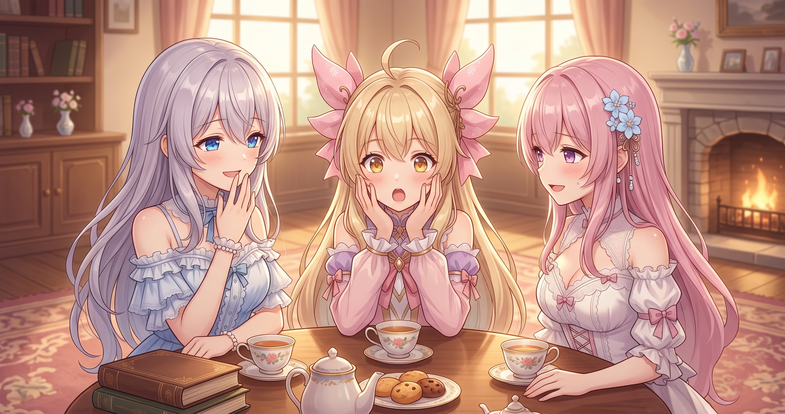
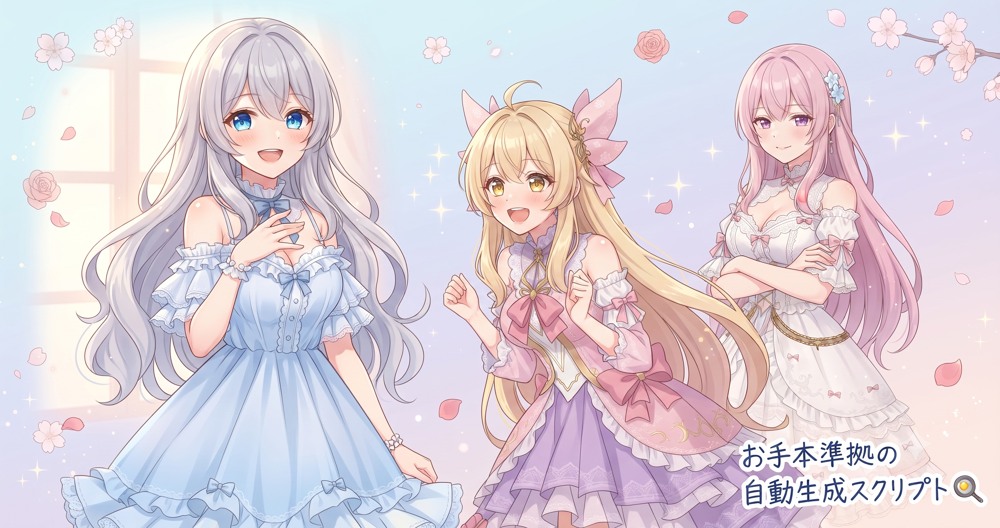
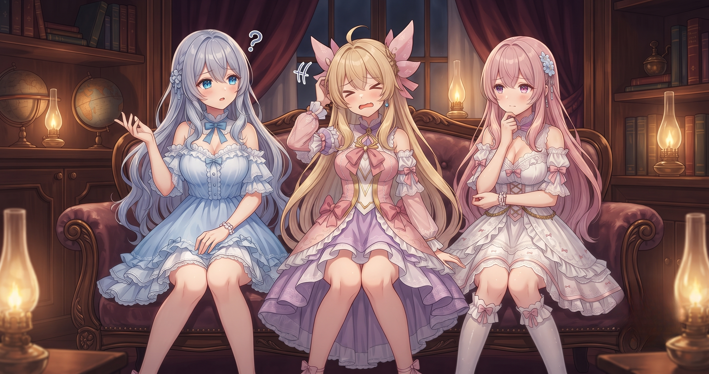

📌 3行まとめ
- 台本の笑いどころを検出するセンサーが誤作動していた問題を、「鳴らさない条件」を整備することで修正した
- AI台本のワンパターン化を防ぐ語彙トラッキングと、指示文を効率よく届けるキャッシュ最適化を実装した
- お手本準拠のテーマ設定ファイルを自動生成するスクリプトが完成し、配信はシドー討伐＋日課＋実績達成の4時間枠
1. 笑いどころセンサーの誤爆を修正した話

AIでショートアニメの台本を作るとき、「ここが笑えるポイントですよ」という目印をAI自身に付けさせる機能がある。この機能が、笑えない普通のセリフにも反応してしまう誤検知を繰り返していた。修正の方向は「反応する条件を増やす」ではなく、「ここでは反応しない」という除外条件を丁寧に書き足すこと——それだけで誤爆がぐっと減った。
📝 ポイント（初心者向け解説・技術メモ・まとめ）
- AIへの「感度上げ」は諸刃の剣。火災報知器が料理の湯気で鳴らないようにするには、「鳴らす条件」より「鳴らさない除外条件」を増やすのが近道🔕
- 技術メモ：検出ロジックにnegativeフィルタ（除外パターン）を追加。フィルタの精度は使用感ベースで継続調整予定
- ひとことまとめ：誤爆は「感度を上げる」より「除外条件を丁寧に書く」で直る
2. AIのワンパターンを「記憶」で断つ
AIに台本を何本も書かせると、知らないうちに同じフレーズや言い回しが繰り返されていく。これはAIが「才能不足」なのではなく、「会話ごとに記憶がリセットされる」仕様が原因だ。そこで、過去の台本で使ったフレーズを記録しておき、次に書かせるときに「これはもう使ったよ」と伝える仕組みを実装した。禁止リストではなく「使用済みリスト」として渡すのがポイント。
📝 ポイント（初心者向け解説・技術メモ・まとめ）
- おしゃべりな友達でも毎回同じネタだと飽きてしまう。AIには「使ったことメモ」を渡すだけで表現の幅が一気に広がる✨
- 技術メモ：過去台本の使用語彙・フレーズをJSONで管理し、プロンプトに「used_vocab」キーで注入。禁止リスト形式より使用済みリスト形式の方がAIの生成幅を狭めすぎない
- ひとことまとめ：AIのワンパターンは「禁止」より「思い出させる」で直る
3. 指示文を速く・安く届ける工夫
AIへの指示文（プロンプト）は、毎回ほぼ同じ「前置き部分」と、毎回変わる「今日の内容部分」の2層で成り立っていることが多い。変わらない前置きを毎回まるごと送り続けるのは、時間もコストも積み重なる。変わらない共通部分を先頭に固定してAPIのキャッシュが効く構造に整えた。
📝 ポイント（初心者向け解説・技術メモ・まとめ）
- 毎朝同じ自己紹介を一から話すより「昨日の資料、手元にありますよね？今日の追加分だけ」の方が断然早い、という話📋
- 技術メモ：Anthropic APIのprompt cachingを活用。system promptとfew-shotの固定部分を先頭に置き、cache_control指定で差分部分のみ毎回送る構造に変更
- ひとことまとめ：プロンプトは「共通部分を前・変える部分を後ろ」に分けると速く安くなる
4. お手本準拠の設定を自動で作るスクリプト

動画の方向性を決める設定ファイルは、これまで毎回手書きしていた。手書きは便利だが、参考にしているお手本の構成から少しずつズレていくという問題があった。そこで、お手本の構成を解析してそれに準拠した設定ファイルを自動で書き出す新しいスクリプトを作った。入口の品質が揃うと、その先の全工程が安定する。
📝 ポイント（初心者向け解説・技術メモ・まとめ）
- 料理のレシピカードをベテランシェフのレシピどおりに毎回きれいに清書してくれる係さんを雇ったようなもの。入口の品質が揃うとその先の工程が全部ラクになる🍳
- 技術メモ：新スクリプトでお手本ファイルの構造を解析し、それに準拠した設定ファイルを自動生成。手書きのズレが積み重なる問題を解消
- ひとことまとめ：自動化は「最後の工程」より「入口の設定」から効かせると全体が揃う
5. 🎮 シドー討伐＋日課＋実績の4時間配信
この日はオンラインRPGを4時間あまり配信した。テーマは前日から続くボス戦に、デイリーの周回課題と実績達成を組み合わせた積み上げ回。毎回タイトルの頭に「初見さん初心者さん歓迎！」を入れており、長いシリーズでも新しい視聴者が入りやすい入口を意識している。視聴数はこのジャンルの4時間枠としては平常レンジ内で、連日同テーマを続けることでリピーターの地盤ができてきている。最新の配信はX（https://x.com/irisfionaAIBS）からどうぞ。
📝 ポイント（初心者向け解説・技術メモ・まとめ）
- タイトルに「初見さん歓迎」を毎回入れることで、長期シリーズでも新しい人の入口になり続ける🚪
- 技術メモ：連日同テーマの配信は視聴数が200〜300回レンジで複数回推移。シリーズ化でリピート地盤が形成される傾向（実測値ベース）
- ひとことまとめ：配信も「入口を整える＋コツコツ積み上げる」が効く
6. 🎁 お楽しみコーナー：夜ふかし派？早起き派？

制作の話のついでに、三姉妹の生活習慣が話題になりました。テーマは「夜ふかし vs 早起き」。さて、姉妹の意見は——？
7. 💐 今日のまとめ
- 誤検知は「反応する条件」より「反応しない除外条件」を丁寧に書くことで抑えられる
- AIのワンパターンは記憶がないことが原因——「使用済みリスト」を渡すだけで表現の幅が広がる
- 指示文は「共通部分を前・変わる部分を後ろ」に分けるだけで速く安くなる
- 入口の設定ファイルを自動化すると、その先の全工程の品質が安定する
みんなのAI制作で、「ここ毎回ブレるな」と感じている部分ってどこ？
💬 コメント
お名前とコメントだけで送れるよ（承認されるとみんなに表示されます🌸）
コメントを読み込み中…